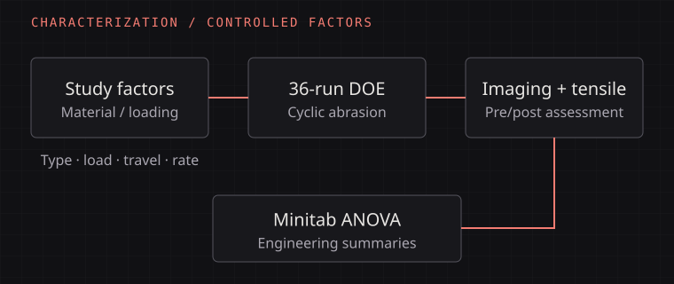

Medtronic Aortic / Experimental design & analysis
Suture Abrasion Characterization DOE.
Owned a 36-run, multi-factor abrasion characterization study, coordinating sample preparation, cyclic testing, pre/post imaging, tensile testing, and Minitab ANOVA.

Engineering problem
The team needed a structured way to characterize suture degradation under cyclic abrasion. Material choice and test conditions could influence observed behavior, so the study needed coordinated sample preparation, controlled execution, and consistent post-test assessment.
My contribution
I owned and executed a 36-run, multi-factor characterization DOE investigating suture type, load, travel distance, and frequency. I managed sterilization logistics, pre/post-test imaging, tensile pull-to-failure work, and data analysis.
I performed ANOVA in Minitab and created cycles-to-failure summary presentations to help the team review the characterization evidence.
Technical approach
Structure the characterization study
Organized 36 runs around four study factors: suture type, load, travel distance, and frequency. The purpose was to create a foundational dataset for understanding degradation under cyclic loading.
Manage sample readiness and execution
Coordinated sterilization logistics and test readiness, then executed the cyclic-abrasion characterization work.
Connect mechanical testing with imaging
Managed pre/post-test imaging and tensile pull-to-failure work so the evidence included both physical observations and mechanical assessment.
Analyze and communicate the study
Used ANOVA in Minitab and organized cycles-to-failure results into engineering summary presentations.
Related method-standardization work
I also updated a suture tensile test method across two Instron platforms using Bluehill 3 and Bluehill Universal. This included consistent dry/wet procedures and investigation of grip slippage through grip selection, pressure optimization, and sample-marking protocols.
Result
36 characterization runs
4 study factors · pre/post imaging · tensile assessment · Minitab ANOVA
Delivered a foundational cyclic-abrasion dataset, an associated testing and analysis workflow, and cycles-to-failure summary presentations for the team.
This public summary describes the study’s scope and workflow. It does not publish factor levels, raw observations, effect sizes, significance results, or proprietary material-performance conclusions.
Lessons learned
A characterization study is more than the statistical analysis. Sample preparation, cyclic-test execution, imaging, and tensile assessment need to form a consistent evidence chain before the team can interpret the results.
Operator procedures and grip behavior also matter: apparent material differences can be difficult to assess when the measurement method itself is changing.
Continue exploring
Portable Stroke Detection